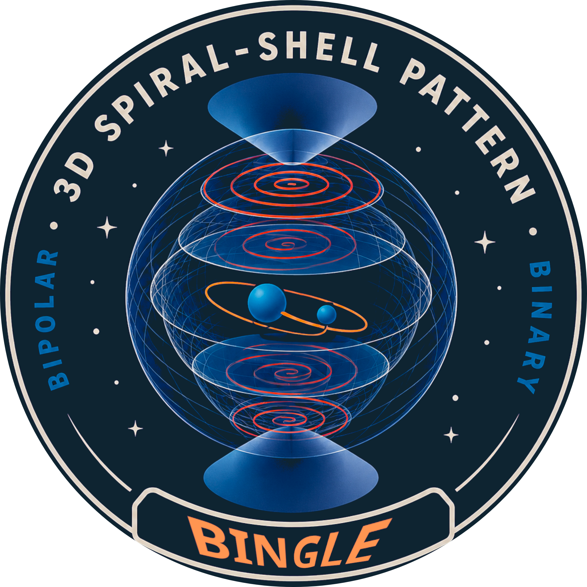
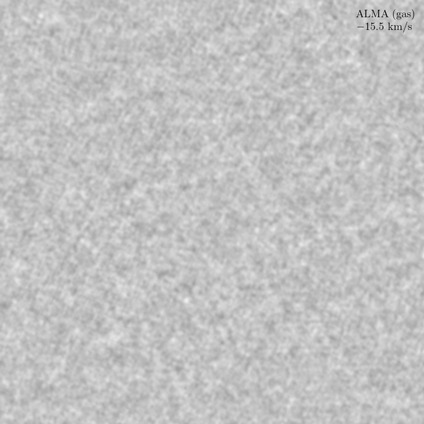

나선은 어떻게 만들어질까요?
별 주변을 입체적으로 감싸는 나선과 호 모양의 구조. 관측 영상에 드러난 팔의 위치, 간격과 폭을 측정해 성주위 물질의 분포를 살펴봅니다.

BINGLE빙글EVOLVED STARS · BINARY SYSTEMS
별이 내보낸 가스와 먼지에 새겨진 무늬.
빙글은 그 안에서 질량 방출과 동반성의 흔적을 찾습니다.
BINary Governed spiraL-shells of Evolved stars

++나선구각구조에 새겨진 쌍성의 흔적을 탐구합니다.
01 — OUR SCIENCE
BINGLE은 AGB 별과 post-AGB 천체 주변의 나선구각구조를 연구합니다. 하늘에 보이는 모양과 가스의 속도를 함께 분석해, 별의 바람이 어떻게 퍼지고 동반성과 어떻게 상호작용하는지 알아갑니다.
별 주변을 입체적으로 감싸는 나선과 호 모양의 구조. 관측 영상에 드러난 팔의 위치, 간격과 폭을 측정해 성주위 물질의 분포를 살펴봅니다.
질량을 방출하는 별의 궤도운동은 주변 물질에 무늬를 남길 수 있습니다. 나선의 비대칭과 반복되는 패턴에서 중심 쌍성의 특성을 추적합니다.
속도별 영상과 위치–속도 도표로 가스의 운동과 outflow를 분석합니다. 형태와 운동을 연결해 실제 입체 구조를 이해하는 것이 목표입니다.
02 — A CLOSER LOOK
하나의 영상에서 시작해, 속도에 따른 변화까지.
실제 연구에 쓰이는 관측·분석 자료를 만나보세요.
중심부의 강한 방출과 주변의 희미한 구조를 구분하며, 나선팔의 간격과 폭을 측정합니다.
속도별 분자선 영상을 비교하며, 나선구각구조의 형태와 가스의 운동을 함께 살펴봅니다.
영상에서 이어지는 능선을 찾아 구조를 분리하고, 인접한 속도 채널의 정보를 연결합니다. Python 기반 영상 분석으로 희미하고 복잡한 패턴을 정량화합니다.
이 그림은 위치–위치–속도(PPV) 공간의 시각화입니다. 속도 축은 실제 거리 축과 다르며, 공간의 3차원 복원 결과를 뜻하지 않습니다.
그림: BINGLE 제공 자료 · 개별 제작자, 관측 프로젝트 및 출처 크레딧은 확인 후 보완 예정입니다.
IRAS 06530−0213 서로 다른 진화한 별에 구조 검출과 분석 방법을 적용하며 연구를 넓혀갑니다.
03 — PEOPLE
관측 자료를 들여다보고, 분석 방법을 만들고, 별의 진화를 이야기합니다.
책임연구원
별생성진화연구센터
박사후연구원
별생성진화연구센터
박사후연구원
별생성진화연구센터
JOIN BINGLE
항성 진화와 쌍성, 관측 자료 속의 패턴이 궁금하다면.
빙글에서 함께 탐구할 학생을 기다립니다.
01 분자선 영상과 속도 정보로 실제 관측 자료 분석하기
02 Python으로 영상 처리, 구조 측정, 시각화하기
03 관측에서 얻은 패턴을 별의 바람·쌍성 모형과 비교하기
담당자: [모집 담당자 정보]
이메일: [이메일 정보]
모집 과정·일정·지원 방법: [모집 세부 정보]